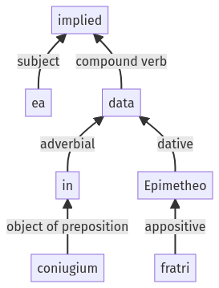

Hyginus, Fabulae, 142a.1.32-142a.1.37a
142a.1.28-142a.1.31a | 142a.1.38-142a.1.47a
Sentence 1415
142a.1.32-142a.1.37a
ea data in coniugium Epimetheo fratri;
1 ea data in coniugium Epimetheo fratri
ea data in coniugium Epimetheo fratri;
Highlighting:
- connecting words
- unit verb
- subject
- object
Color code:
- independent clause (level 1, transitive verb)
